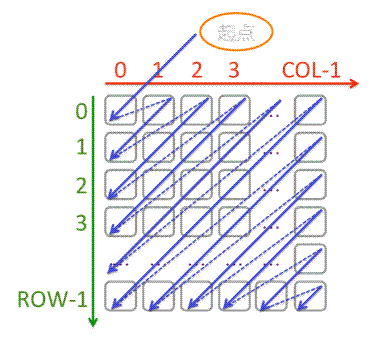

给定一个 $row$ 行 $col$ 列的整数数组 array，要求从 array[0][0] 元素开始，按从左上到右下的对角线顺序遍历整个数组。
array
array[0][0]

输入的第一行上有两个整数，依次为 $row$ 和 $col$。
余下有 $row$ 行，每行包含 $col$ 个整数，构成一个二维整数数组。
（注：输入的 $row$ 和 $col$ 保证 $0 < row < 100, 0 < col < 100$。数组中每个整数在int范围内）
按遍历顺序输出每个整数。每个整数占一行。
3 4 1 2 4 7 3 5 8 10 6 9 11 12
1 2 3 4 5 6 7 8 9 10 11 12
 Comet OJ
Comet OJ